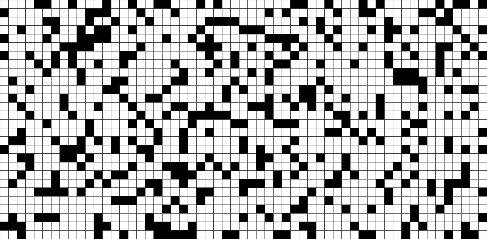

Qual é o menor caminho entre dois quadrados na imagem abaixo?
TL;DR;
Clique aqui para pular para a demonstração.
O menor caminho entre os cantos
Considerando que a imagem representa um mapa onde quadrados brancos são caminhos livres e quadrados pretos são caminhos obstruídos, podemos nos perguntar: qual é o menor caminho entre o quadrado superior esquerdo e o quadrado inferior direito?

Motivação
Estruturas de dados são interessantes sim! Pilhas e Filas são estruturas de dados básicas, porém úteis para responder esse tipo de questão.
Demonstração Interativa
A demonstração feita com HTML5 Canvas usa um algoritmo que vai destacar o menor caminho entre o canto superior esquerdo e o canto inferior direito, se este caminho existir.
Você pode interagir clicando em cada quadrado para abrir ou fechar o caminho.
Clique aqui para visualizar a demonstração.